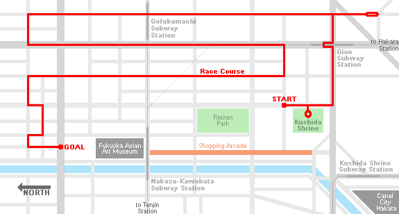
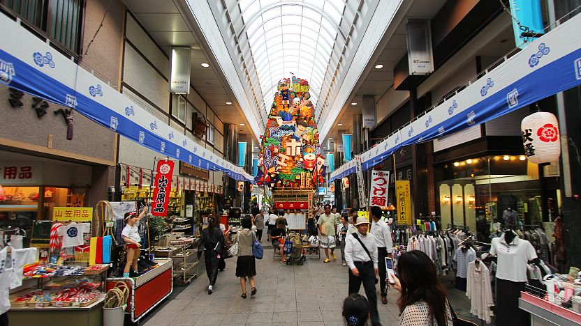
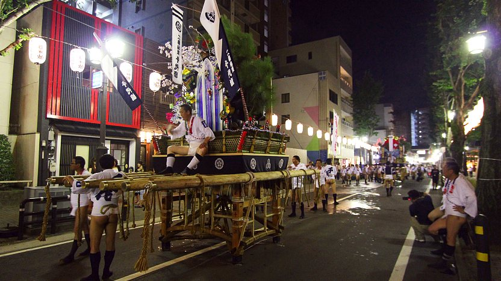

Hakata Gion Yamakasa Festival
博多祇園山笠
The Hakata Gion Yamakasa (博多祇園山笠) is one of the most interesting festivals in Japan. It is held every year during the first half of July and climaxes with a spectacular time trial race in the early morning hours of July 15. In the race, seven neighborhoods of Fukuoka's Hakata district compete in pushing beautifully decorated festival floats along a five kilometer long course through the city.
The festival features two different types of floats:
The larger kazariyama floats stand over ten meters tall and weigh over two tons. In the past they used to be raced through the streets, however, with the introduction of power lines in the Meiji Period (1868-1912), this became problematic, and today they only serve as decorative floats. 14 of them stand spread out across the city from July 1 to 14, including two at Hakata Station and Canal City Hakata.
For the race, smaller-sized kakiyama floats - about five meters tall and one ton heavy - are used today. There are seven of them, one for each of the neighborhoods participating in the race. The floats do not have wheels and are dragged through the streets, while water is spread in front of the float in order to reduce friction between the float and the road surface (and to cool down the participants).
From July 10 to 14, the seven teams hold several practice runs and parades in preparation for the main race. A good English booklet is available with detailed maps and time schedules for these events which are interesting to watch. On July 15 just after 1am, all teams line up behind the start line, which is located in front of Kushida Shrine, the festival's host shrine.
On July 15 at 4:59am, just before sunrise, the first team starts into the race, followed by the other teams in five minute intervals. Despite the early time of the day, thousands of spectators line the five kilometer long course, which includes several tight turns and long stretches along both narrow lanes and broad streets. It takes each team roughly 30 minutes of intense effort to complete the course.
There is ample of space to see the race along its long course, except around some of the more spectacular sections, e.g. the start area, where people show up hours in advance to reserve good viewing spots. Paid seating is available in the small court yard of Kushida Shrine, where each team has to push its float around a pole, but high competition makes these seats virtually impossible to get.